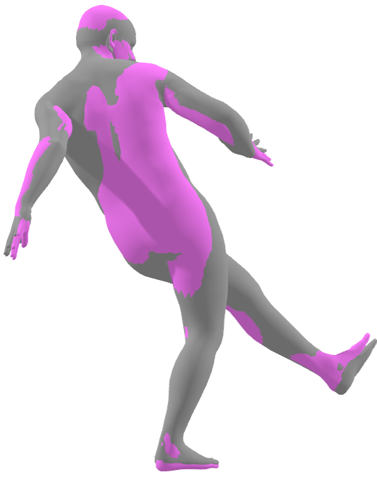
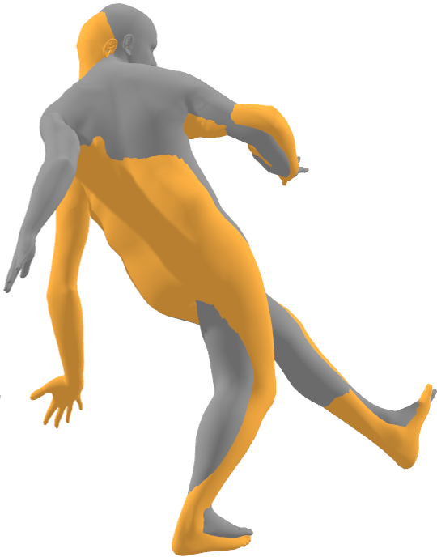
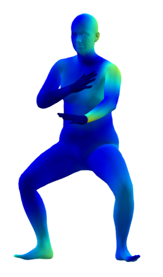
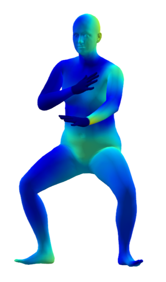

Real-time optical Motion Capture (MoCap) systems have not benefited from the advances in modern data-driven modeling.
In this work we apply machine learning to solve noisy unstructured marker estimates in real-time and deliver robust marker-based MoCap even when using sparse affordable sensors. To achieve this we focus on a number of challenges related to model training, namely the sourcing of training data and their long-tailed distribution. Leveraging representation learning we design a technique for imbalanced regression that requires no additional data or labels and improves the performance of our model in rare and challenging poses. By relying on a unified representation, we show that training such a model is not bound to high-end MoCap training data acquisition, and instead, can exploit the advances in marker-less MoCap to acquire the necessary data.
Finally, we take a step towards richer and affordable MoCap by adapting a body model-based inverse kinematics solution to account for measurement and inference uncertainty, further improving performance and robustness.
The generative and disentangling nature of modern synthesis models shape manifolds that map inputs to the underlying factors of data variation, effectively mapping similar poses to nearby latent codes which can be traversed across the latent space dimensions. Using two anchor poses we use SLERP to select a code in-between them and generate plausible poses.
Start Frame
End Frame
Tail poses are hard to reconstruct accurately. We exploit this bias in pose reconstructability and transform it to a confidence value through a relevance function. From the investigated functions we opt for the exponential one - normalized by a scaling factor σ - which assigns higher penalties to the worst reconstracted poses. We use turbo colorization to color-code the assigned penalty (weight) as you can see below. The depicted samples belong to the AMASS dataset [1].
Tail poses are hard to reconstruct accurately. We exploit this bias in pose reconstructability and transform it to a confidence value through a relevance function. From the investigated functions we opt for the exponential one - normalized by a scaling factor σ - which assigns higher penalties to the worst reconstracted poses. We use turbo colorization to color-code the assigned penalty (weight) as you can see below. The depicted samples belong to the AMASS dataset [1].
Tail poses are hard to reconstruct accurately. We exploit this bias in pose reconstructability and transform it to a confidence value through a relevance function. From the investigated functions we opt for the exponential one - normalized by a scaling factor σ - which assigns higher penalties to the worst reconstracted poses. We use turbo colorization to color-code the assigned penalty (weight) as you can see below. The depicted samples belong to the AMASS dataset [1].
Labeled vs. Unlabeled


|
Noise-aware Fitting


|
@inproceedings{albanis2023noise,
author = {Albanis, Georgios, and Zioulis, Nikolaos, and Thermos, Spyridon, and Chatzitofis, Anargyros and Kolomvatsos, Kostas.},
title = {Noise-in, Bias-out: Balanced and Real-time MoCap Solving},
booktitle = {Proceedings of the IEEE/CVF International Conference on Computer Vision (ICCV) Workshops},
url = {https://moverseai.github.io/noise-tail/},
month = {October},
year = {2023}
}